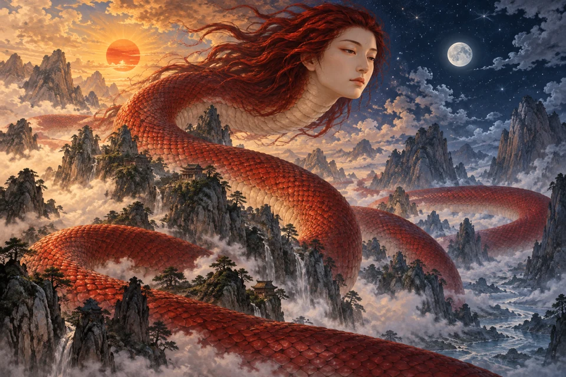
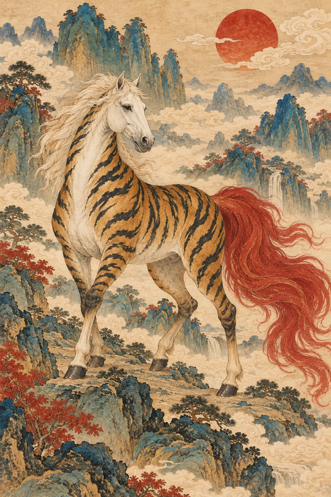

从原文中辨形
记录篇章、山名与形态。纠正毕方独翼、陆吾八足等误读，区分原文与后世演化。
奇形不止于想象。每一位异兽，都有古籍中的来处，也有属于今日的一次重新描绘。
按古籍篇章走进山海。同一座山里的异兽、不同篇章里的相近形态，都值得停下来对读。

《山海经》留下的，常常只有几句极简的形态描述。白首、赤尾、一足、九尾……寥寥数语，打开了一个庞大的想象世界。
我们从原文中提取不可替换的形态特征，以工笔线描、矿物重彩与宣纸肌理重新演绎。文字是锚点，画面是回应。
其状如马而白首，探寻文字的来处 ↗
其文如虎而赤尾。《山海经 · 南山经》鹿蜀
记录篇章、山名与形态。纠正毕方独翼、陆吾八足等误读，区分原文与后世演化。
固定纸本、线描与矿物色语汇。每位异兽独立生成，提示词与文件对应留存。
拖动、翻阅、聆听、收藏。在丹青工坊中亲手调整色彩与肌理，导出自己的数字藏页。
从工笔重彩，到古籍版画。推开对照线，让色彩、描边与纸纹在你手中发生变化。

原始画作丹青重绘锁定一套山海矿物色，让每一笔的浓淡都有迹可循。
神话可以奇异，记录应当诚实。这里保留每一则描述的来处，也说明每一幅画的诞生。
本作采用 AI 辅助生成插画与程序代码。图像依据古籍特征进行艺术演绎，不是古代图像复原；山川、配景与部分色彩属于创作选择。图鉴释义为本作整理，古籍中的食用、禳除等叙述仅作文化记录。语音导览调用设备支持的浏览器语音服务，可用性取决于系统。提示词、来源核查与素材文件记录随作品附存。